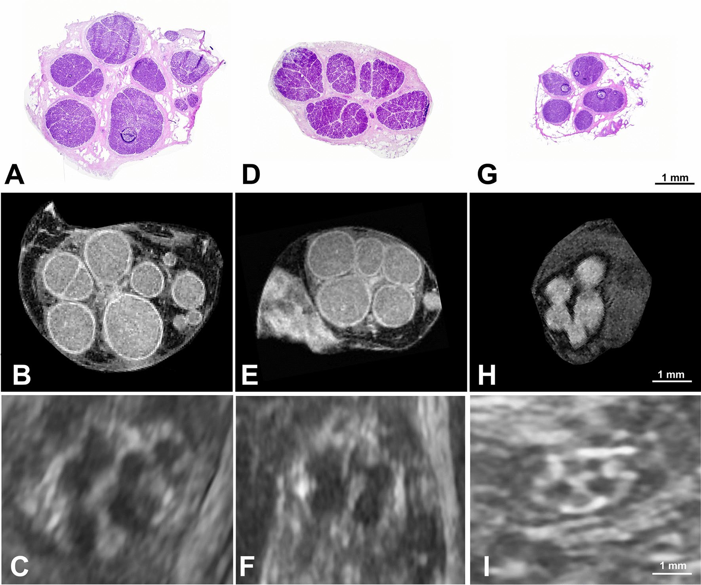

Respuesta clínica corta
¿Cada fascículo aparente en ecografía es un fascículo real?
No necesariamente. La comparación microscópica mostró menor diferenciación con ecografía y señaló que las unidades grandes pueden ser agrupaciones fasciculares.
Dato clave41 nervios · 51–74 % de fascículos diferenciados
La ecografía de 22 MHz diferenció entre el 51 % y el 74 % de los fascículos visibles microscópicamente; una unidad ecográfica grande puede representar varios fascículos agrupados.
Observado
Qué encontró y cómo interpretarlo
La comparación con histología, resonancia microscópica y tomografía óptica ofrece una referencia anatómica excepcional.
La ecografía infraestimó la separación fascicular y modificó medidas de área respecto a técnicas microscópicas.
Los hallazgos corrigen una interpretación visual frecuente, pero no evalúan diagnóstico, pronóstico ni respuesta al tratamiento.
Atlas del artículo
Imágenes para entender el procedimiento
Estas figuras proceden del artículo original y se reproducen con licencia abierta verificada. Se muestran por su utilidad anatómica o técnica, no como prueba aislada de diagnóstico o eficacia.

Las filas comparan la delimitación fascicular en tres nervios y tres modalidades de imagen.
Cómo leerlaLas imágenes son cadavéricas y no establecen criterios diagnósticos para neuropatía.
Pušnik L y colaboradores. Figura reproducida bajo licencia CC BY 4.0; consulte el artículo original. · Fuente · Licencia CC BY.
Procedimiento del artículo
Lectura prudente del patrón fascicular
La adquisición transversal de alta resolución debe mantener la sonda perpendicular y comparar continuidad, tamaño y distribución antes de etiquetar cada área hipoecoica como un fascículo individual.
- Frecuencia
- 22 MHz
- Nervios
- 41
- Diferenciación
- 51–74 %
- 01
Adquisición transversal
Optimizar foco, ganancia y perpendicularidad y evitar compresión que deforme el nervio.
- Referencias
- Epineuro, fascículos y tejido perineural.
- Lectura
- La ecografía ofrece un patrón mesoscópico, no una réplica histológica.
- 02
Comprobación longitudinal
Seguir las unidades hipoecoicas durante un tramo y revisar divisiones o fusiones aparentes.
- Referencias
- Continuidad nerviosa y cambios de sección.
- Lectura
- Una unidad grande o irregular puede contener varios fascículos próximos.
Protocolo reconstruido de forma prudente desde el texto completo y sus figuras. Sirve para comprender la adquisición y no sustituye formación, razonamiento clínico ni supervisión.
Aplicabilidad
Qué significa clínicamente
Describir patrón fascicular aparente en vez de asumir correspondencia uno a uno con histología.
Interpretar cambios de tamaño junto con técnica, compresión, nivel anatómico y síntomas.
Límite
Qué no permite afirmar
Tejido cadavérico y condiciones de laboratorio.
Equipo de muy alta frecuencia no disponible en todas las consultas.
Sin población con neuropatía ni umbrales clínicos.
Contexto
¿Se parece a tu paciente?
- Población estudiada
- 41 nervios mediano, cubital y radial superficial procedentes de 14 miembros superiores cadavéricos; 142 cortes comparados entre modalidades.
- Diseño
- Estudio cadavérico de validación multimodal
- Resultado evaluado
- Porcentaje de diferenciación y morfometría entre modalidades
Fuente primaria
Lee el estudio, no solo nuestro análisis
Pušnik L, et al. Fascicle differentiation of upper extremity nerves on high-resolution ultrasound. Sci Rep. 2025;15:557. doi: 10.1038/s41598-024-84396-y
Responsabilidad editorial
Francisco José Extremera García
Fisioterapeuta colegiado ICPFA 4288 · Osteópata D.O.
Creador y responsable editorial de FisioLógico
- Última revisión
- Conflictos de interés
- Ninguno declarado.